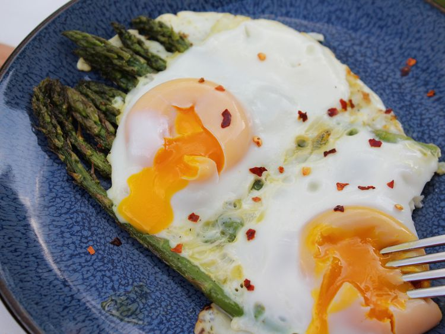

Asparagus and eggs make the best spring breakfast or a beautiful light lunch.
Asparagus is cooked in a pan with a little oil, and topped with two eggs.
Heat a small skillet over medium-high heat. Add olive oil and garlic; cook and stir until garlic is fragrant, about 30 seconds.
Add asparagus and cook until fork-tender, turning asparagus often to ensure even cooking, about 4 minutes.
Spread asparagus out and crack 2 eggs over the asparagus. Cover with lid and cook until egg whites are firm and yolk is done to desired consistency, about 4 minutes.
Season with salt and pepper; sprinkle with red pepper flakes and serve immediately.
Homepage